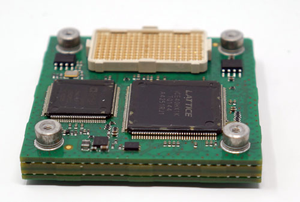
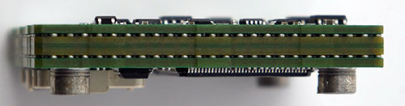
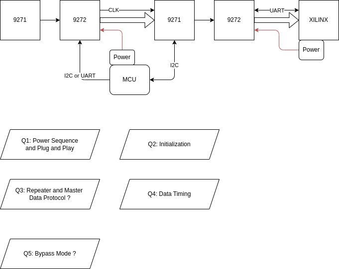
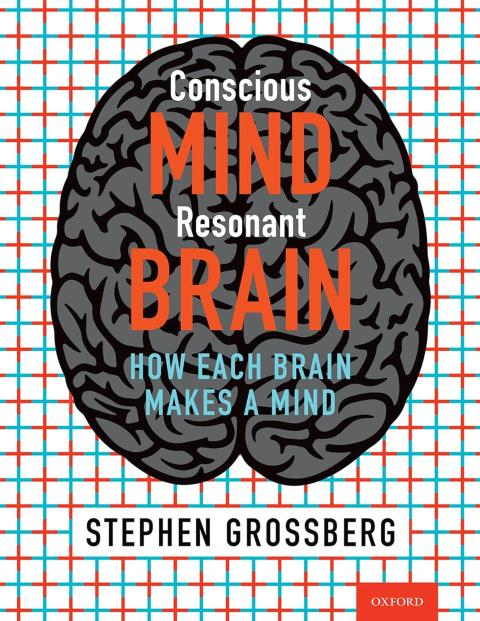
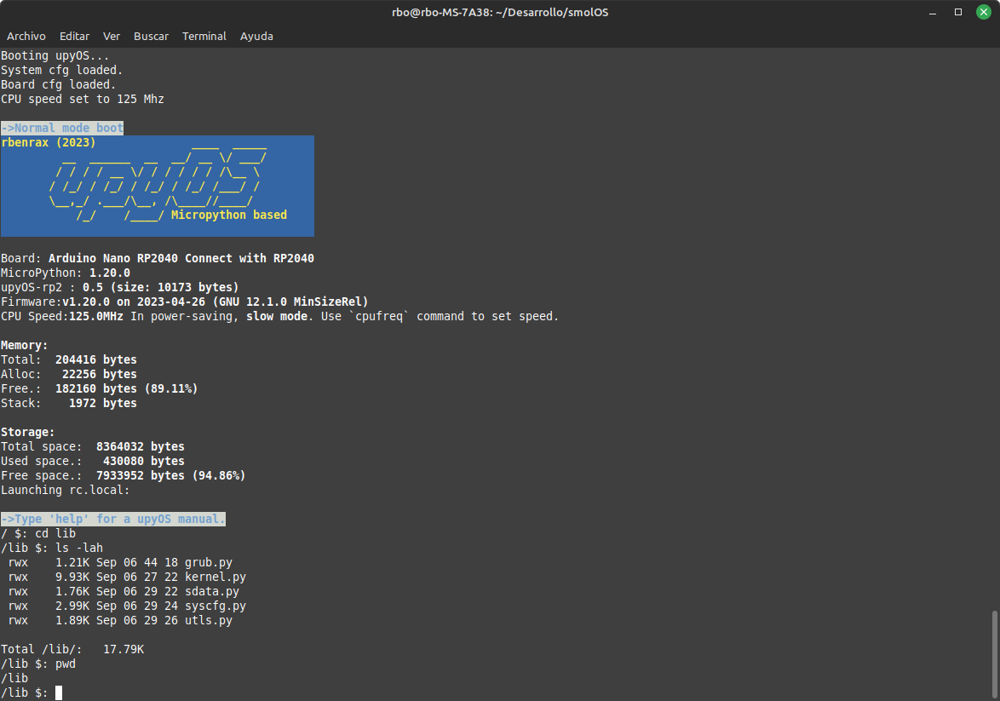

2025-10
2025-10-30
Multi-layer stacked PCB


Expander 2 Subject
2025-10-29
Expander 2 FPGA Internal

2025-10-28
Pico under 1.8V
using RP2040 with switchable 1.8V/3.3V GPIO, for real
Expander 2

Type of Grounds
earth ground
chassis ground
emi ground
circuit ground
local circuit ground
return path
Ground, earth and electrical safety
Ground, earth and electrical safety
2025-10-23
Controlling Instruments with GPIB, Ethernet, USB…or What is Next?
Controlling Instruments with GPIB, Ethernet, USB…or What is Next?
Multiple Device Synchronization from ZhInst


2025-10-20
GMSL Repeater

2025-10-17
upyOS
upyOS is a modular flash Operating System for microcontrollers based on MicroPython. It provides the user with a POSIX-like environment. The original idea is by Krzysztof Krystian Jankowski and has been adapted by me.
Sketching Algorithem (Similar to VSA)

2025-10-16
UNO-Q Inter Process Communication


Conscious Mind, Resonant Brain: How Each Brain Makes a Mind Grossbergian Neuroscience

An Introduction to Tsetlin Machines

An Introduction to Tsetlin Machines
Getting Started with Rust on NXP LPC55S69-EVK
Getting Started with Rust on NXP LPC55S69-EVK
Embassy : Rust for embedded system use Async
Embassy is the next-generation framework for embedded applications. Write safe, correct, and energy-efficient embedded code faster, using the Rust programming language, its async facilities, and the Embassy libraries.
2025-10-15
How non-neuronal brain cells communicate to coordinate rewiring of the brain
How non-neuronal brain cells communicate to coordinate rewiring of the brain
upyOS is a modular flash Operating System for microcontrollers based on MicroPython

2025-10-14
Neuromorphic-Computing-Guide
Is just synaptic weight change ? And how much change will be ? I mean max to min
activitypub
2025-10-13
omarchy linux distribution
缺「鋰」當心失智
5類天然飲食中的鋰
●全穀物與根莖類：小麥、燕麥、米、馬鈴薯、地瓜。
●豆類：扁豆、各式豆類、鷹嘴豆。
●蔬果類：高麗菜、甘藍、萵苣、蘿蔓生菜、芥菜、番茄。
●堅果與種子：原味堅果、芝麻。
●飲用水：日常飲用水、某些地區的礦泉水。
XSCHEM : schematic capture and netlisting EDA tool
- hierarchical schematic drawings, no limits on size
- any object in the schematic can have any sort of properties (generics in VHDL, parameters in Spice or Verilog)
- new Spice/Verilog primitives can be created, and the netlist format can be defined by the user
- tcl extension language allows the creation of scripts; any user command in the drawing window has an associated tcl comand
- VHDL / Verilog / Spice netlist, ready for simulation
- Behavioral VHDL / Verilog code can be embedded as one of the properties of the schematic block,
Building an Open Source ASIC
CH32V317 board offers 10/100Mbps Ethernet, dual USB 2.0 Type-C, DVP interface

Minigrid
The Minigrid library contains a collection of discrete grid-world environments to conduct research on Reinforcement Learning. The environments follow the Gymnasium standard API and they are designed to be lightweight, fast, and easily customizable.
Rare Earth issue to Semiconductor
Chipmaking equipment, such as that produced by ASML and Applied Materials, is particularly dependent on rare earth elements used in high-precision lasers, magnets, and other critical components. ASML is reportedly preparing for significant disruption given the need to obtain export licenses for products containing these materials.
2025-10-08
Efinix Ti60F100S3F2 with HyperRAM 256MBits

2025-10-07
EMG detection time under 200ms

2025-10-03
StimCircuit

It is all about representation

2025-10-02
Circuits - Computation - Models

Circuits - Computation - Models